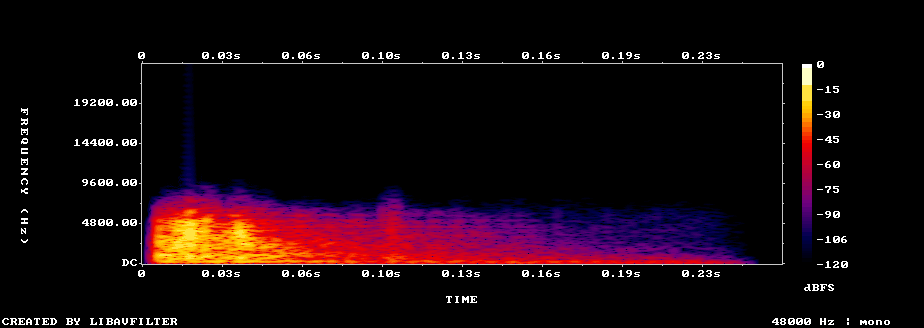
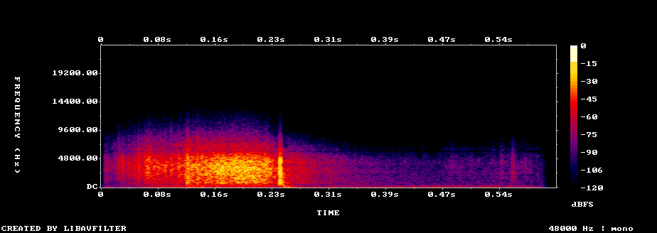
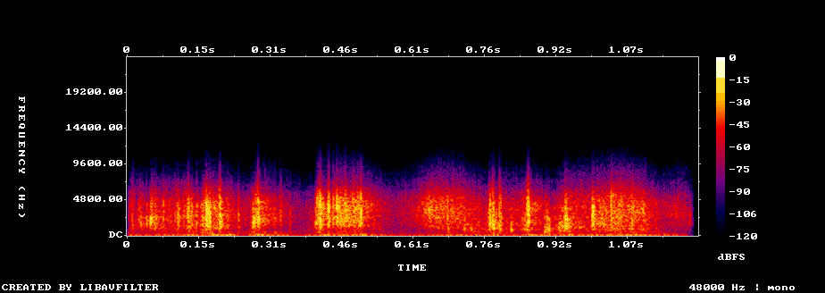
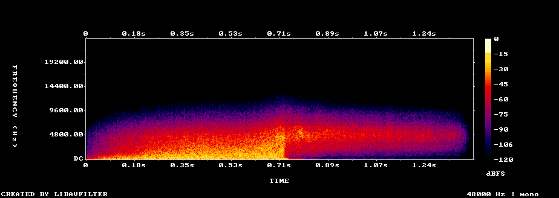
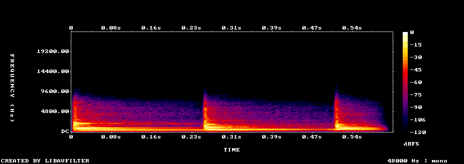
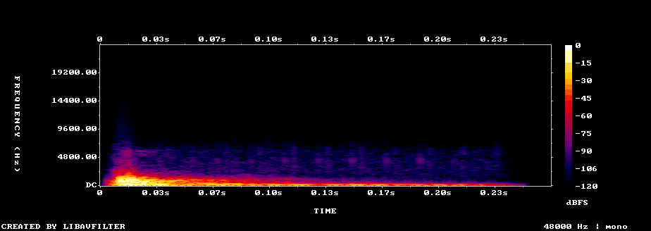
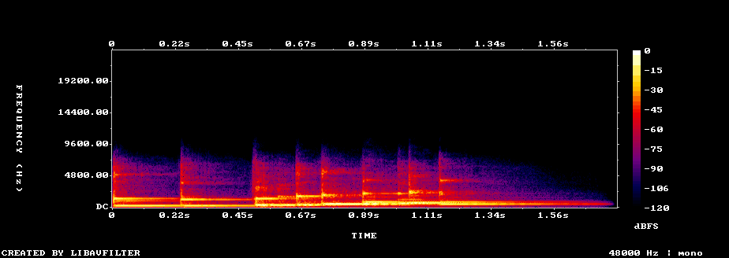

Karte legen
im SpielFavorit ungefiltert (12 kHz)alt (synthetisch)
Spektrogramm (im Spiel)

Mau-Mau Flip · KI-Kandidaten aus MOSS-SoundEffect v2.0 (Apache 2.0) · Stand 06.10.2026
tools/make_sfx_moss.py (SPIEL).| Ton | Favorit | Platz 2, 3 | Kurz |
|---|---|---|---|
| Karte legen | karte_02 | karte_07, karte_09 | ein einzelner Schlag mit glattem Ausklang (0,24 s), unter den knackigen Kandidaten am wenigsten Höhen, auf dem Handy voll hörbar |
| Karte ziehen | ziehen_07 | ziehen_04, ziehen_02 | ein vollständiger, schneller Wisch (nach 50 ms hörbar, nach 0,25 s vorbei), sauber; aber sehr hell |
| Mischen | mischen_06 | mischen_08, mischen_05 | zwei dichte Flatter-Schübe wie beim Riffeln, gleichmäßig laut (fast am Lautheitsziel), AudioSet-Klasse „Shuffling cards“ hier am höchsten |
| Flip | flip_02 | flip_12, flip_10 | einziger Kandidat, den beide Modelle als Wusch hören (AudioSet „Whoosh“ 0,49), danach ein heller Glanz; sauber |
| Du bist dran | dran_04 | dran_05, dran_02 | Marimba/Holz, drei Anschläge aufwärts (etwa A4 – D5 – A5), sauber, klingt nicht nach Handy-Benachrichtigung |
| Fehler | fehler_09 | fehler_11, fehler_05 | hohles, holziges „Tock“ (Schlägel auf Handtrommel), sauber; unter den dumpfen Kandidaten am besten auf dem Handy (−7 dB) |
| Sieg | sieg_03 | sieg_01, sieg_07 | Glockenspiel/Marimba, Töne steigen stufenweise an (gemessen etwa C4 – E4 – G4 – C5, auf einen Halbton genau), sauber, kaum Höhen |
| Stapel aufstoßen | stapel_02 | stapel_06, stapel_08 | zwei klar getrennte, saubere Schläge mit kurzem Aufsetzen, 0,51 s, auf dem Handy voll hörbar |
audio/sfx_README.md erlaubt über 6 kHz höchstens −30 dB; die Papiergeräusche liegen dort bei −4 bis −25 dB.
Die Hinweise „über 6 kHz …“ an den Kandidaten markieren das. Für das Spiel wird jeder Ton vor- und rückwärts
gefiltert, je Ton mit der höchsten Grenzfrequenz zwischen 4 und 6 kHz, die die Leitplanke einhält.Seit 06.10.2026 spielen App und Browser-Client diese Fassungen. Je Ton der Favorit, vor- und rückwärts tiefpassgefiltert (Butterworth, zusammen 48 dB/Oktave) mit der höchsten Grenzfrequenz zwischen 4 und 6 kHz, bei der über 6 kHz höchstens −30 dB bleiben (Katzen-Leitplanke). So bleibt jeder Ton so hell wie möglich. Lautstärken sind aufeinander abgestimmt: Karte legen dezent, „Du bist dran“ und Sieg am lautesten, alle leiser als der Mau-Ton. Im Spiel kommt die Stufe „Spieltöne“ dazu: „normal“ −4,5 dB, der Mau-Ton spielt bei „normal“ mit −2,0 dB. „gegen Mau“ ist der Abstand zur Aufnahme „Mao“ im Spiel. Spieltöne sind ab Werk aus (Einstellungen → Spieltöne).
| Ton | Kandidat | Tiefpass | Lautheit | Handy-Verlust | über 6 kHz | gegen Mau |
|---|---|---|---|---|---|---|
| Karte legen | karte_02 | 5,85 kHz | −25,2 LUFS | −0,4 dB | −30,3 dB | −16,3 dB |
| Karte ziehen | ziehen_07 | 5,05 kHz | −24,5 LUFS | −0,1 dB | −30,6 dB | −15,6 dB |
| Mischen | mischen_06 | 4,75 kHz | −22,5 LUFS | −0,1 dB | −30,3 dB | −13,6 dB |
| Flip | flip_02 | 5,35 kHz | −20,5 LUFS | −3,4 dB | −30,5 dB | −11,6 dB |
| Du bist dran | dran_04 | 6,00 kHz | −17,5 LUFS | −2,6 dB | −48,1 dB | −8,6 dB |
| Fehler | fehler_09 | 6,00 kHz | −21,7 LUFS | −5,3 dB | −80,8 dB | −12,8 dB |
| Sieg | sieg_03 | 6,00 kHz | −16,5 LUFS | −6,3 dB | −48,9 dB | −7,6 dB |

Zusätzlich eine schmale Kerbe bei 6000 Hz: Schon der Rohton enthält dort einen reinen Pfeifton (wohl ein Rest des Modells), 14 dB über der Umgebung.




Zusätzlich Tiefen −6 dB unter 300 Hz: Der Körper des Tons liegt bei etwa 165 Hz, den ein Handy-Lautsprecher nicht wiedergibt. So bleibt Platz für den hörbaren Teil.


Unter jedem Ton zum Vergleich der ungefilterte Favorit (Kandidat, Tiefpass 12 kHz) und der alte
synthetische Ton. Erzeugt mit tools/make_sfx_moss.py --spiel; Messwerte in
spiel/messwerte.json.
Das Modell erkennt bei keinem Kandidaten sicher eine Spielkarte; es hört Klicks, Klacken und Holzschläge. Kurze Schläge sind für Beschreibungsmodelle schwer, hier zählt der Hörtest besonders. Die drei Favoriten sind einzelne, saubere Schläge ohne Übersteuerungsverdacht. Wer es dumpfer mag (Filztisch, katzenfreundlich): karte_04, auf dem Handy aber 6 dB leiser.
„a single playing card tossed onto a wooden table, crisp light paper slap, close-up, dry room, no music“
Modell hört: metallisches Klicken mit kurzem Klappern (wie ein kleiner Gegenstand, der aufschlägt), sauber
Warum Favorit: Ein Schlag mit glattem, kurzem Ausklang, keine Nachschläge. Über 6 kHz −22,6 dB (die wenigsten Höhen der knackigen Kandidaten), Handy −0,4 dB, Original mit 67 dB Rauschabstand. Das Modell hört ein metallisches Klicken mit kurzem Klappern; beim Anhören prüfen, ob es nach Karte oder nach Münze klingt.

Freie Beschreibung:
Antwort auf die gezielte Frage:
AudioSet (AST): Door 0,16, Coin (dropping) 0,04, Creak 0,04, Sound effect 0,04
„a plastic coated playing card flicked onto a wooden tabletop, one short dry slap, single hit“
Modell hört: kurzer, heller Schlag wie ein kleiner Metallgegenstand auf harter Fläche, sauber
Bewertung: Sehr kurzer, kräftiger Schlag (0,14 s) mit tiefem Anteil (Schwerpunkt 956 Hz), Handy −1,2 dB. Heller als karte_02 (über 6 kHz −15,4 dB); das Modell hört einen kleinen Metallgegenstand auf harter Fläche, sauber.

Freie Beschreibung:
Antwort auf die gezielte Frage:
AudioSet (AST): Sound effect 0,07, Door 0,06, Knock 0,04, Slam 0,03
„a plastic coated playing card flicked onto a wooden tabletop, one short dry slap, single hit“
Modell hört: einzelner, sehr kurzer Klick wie eine mechanische Tastatur, sauber
Bewertung: Der kürzeste (0,10 s), knackig; AudioSet ordnet ihn am ehesten als „Slap, smack“ ein. Das Modell hört eine mechanische Tastatur – beim 50. Mal könnte das nach Tippen klingen. Hell (über 6 kHz −11 dB), schmale Spitze bei 7,6 kHz.

Freie Beschreibung:
Antwort auf die gezielte Frage:
AudioSet (AST): Sound effect 0,10, Slap, smack 0,05, Speech 0,03, Music 0,03
„a single playing card tossed onto a wooden table, crisp light paper slap, close-up, dry room, no music“
Modell hört: scharfer Klick und dumpfer Aufschlag, wie ein Kameraverschluss
Bewertung: Mehrere Nachschläge (Einsätze bei 64, 117, 181, 224 ms); das Modell hört Klick und Aufschlag wie einen Kameraverschluss. Sehr hell (über 6 kHz −9,5 dB).

Freie Beschreibung:
Antwort auf die gezielte Frage:
AudioSet (AST): Crack 0,10, Coin (dropping) 0,07, Breaking 0,04, Crackle 0,03
„one playing card placed down firmly on a felt card table, soft papery snap, close-up, quiet room“
Modell hört: Holzschlag auf einen hohlen Körper, holzig und kurz, sauber
Bewertung: Holzschlag auf hohlem Körper, dumpf und sauber (über 6 kHz −36,5 dB, katzenfreundlich), auf dem Handy aber −6,1 dB. Dumpfe Alternative.

Freie Beschreibung:
Antwort auf die gezielte Frage:
AudioSet (AST): Sound effect 0,08, Fart 0,07, Knock 0,04, Door 0,04
„one playing card placed down firmly on a felt card table, soft papery snap, close-up, quiet room“
Modell hört: metallisches Klacken mit Aufprall und Nachklingen; das Modell hört Übersteuerung und Rauschen
Bewertung: Drei Schläge, AudioSet „Knock“ 0,66; das Modell hört Übersteuerung und Rauschen.

Freie Beschreibung:
Antwort auf die gezielte Frage:
AudioSet (AST): Knock 0,66, Door 0,07, Thunk 0,05, Tap 0,04
„one playing card placed down firmly on a felt card table, soft papery snap, close-up, quiet room“
Modell hört: spröder Knacks mit dumpfem Aufschlag; das Modell hört Übersteuerung
Bewertung: Dumpfer Knacks mit Aufschlag, katzenfreundlich (über 6 kHz −47,6 dB), Handy −6,0 dB; das Modell hört Übersteuerung (gemessen nicht, Spitze −1,1 dBTP).

Freie Beschreibung:
Antwort auf die gezielte Frage:
AudioSet (AST): Knock 0,05, Door 0,02, Sound effect 0,02, Chopping (food) 0,02
„a plastic coated playing card flicked onto a wooden tabletop, one short dry slap, single hit“
Modell hört: lauter Schlag mit Aufprall; das Modell hört harte Übersteuerung
Bewertung: Zwei Schläge, sehr spitz (6 dB begrenzt, danach 6 dB abgesenkt), Original mit nur 54 dB Rauschabstand; das Modell hört harte Übersteuerung.

Freie Beschreibung:
Antwort auf die gezielte Frage:
AudioSet (AST): Sound effect 0,09, Crack 0,07, Clapping 0,03, Tap 0,02
„a single playing card tossed onto a wooden table, crisp light paper slap, close-up, dry room, no music“
Modell hört: schnelle Folge von Knacken und Knistern
Aussortiert: kein einzelner Kartenschlag, sondern eine Folge vieler Klicks (eher Riffeln)

Freie Beschreibung:
Antwort auf die gezielte Frage:
AudioSet (AST): Coin (dropping) 0,72, Crackle 0,02, Sound effect 0,01, Crushing 0,01
Kein Kandidat klingt für das Modell nach Gleiten; es hört Reißen, Knistern oder Klicks. Die Wisch-Form (anschwellendes Rauschen, das wieder abfällt) haben nur ziehen_04, ziehen_05 und ziehen_07; sie sind hell (über 6 kHz −3,8 bis −6,4 dB) mit einer Betonung um 6 kHz und liegen damit weit über der Katzen-Leitplanke. Der alte Ton war deshalb bei 2,4 kHz begrenzt. Für ziehen lohnt der Vergleich mit Tiefpass 5 kHz besonders. ziehen_06 wäre der wärmste, aber sein Hauptteil liegt erst bei 0,4–0,55 s und wird von der Zieldauer 0,6 s abgeschnitten.
„a single card pulled from a card stack across a table, soft brushing slide, dry“
Modell hört: einzelnes, sauberes Reißen von steifem Papier in einem Zug
Warum Favorit: Rauschen schwillt in 0,15 s an und fällt bei 0,25 s ab, endet mit einem leisen Klick; danach nur noch leiser Ausklang. Schnell da (46 ms), kurz – gut für einen häufigen Ton. Das Modell hört einen sauberen, einzelnen Riss durch steifes Papier. Sehr hell (Schwerpunkt 5,7 kHz, über 6 kHz −3,8 dB), Betonung bei 6 kHz.

Freie Beschreibung:
Antwort auf die gezielte Frage:
AudioSet (AST): Crunch 0,10, Tearing 0,10, Sound effect 0,04, Single-lens reflex camera 0,03
„drawing one card from a deck, short smooth slide of paper against paper, close-up, quiet room“
Modell hört: kurzes Reißen oder Ratschen (Folie) mit leisem Rascheln, sauber
Bewertung: Die deutlichste Wisch-Form: Anschwellen 0,1–0,35 s, kleiner Klick am Ende wie ein Aufsetzen. AudioSet am ehesten „Zipper“. Hell (über 6 kHz −4,3 dB) mit schwachen Linien bei 16–17,6 kHz; erst nach 164 ms laut, wirkt also verzögert.

Freie Beschreibung:
Antwort auf die gezielte Frage:
AudioSet (AST): Zipper (clothing) 0,03, Finger snapping 0,02, Scrape 0,02, Sound effect 0,02
„a playing card slid off the top of a deck and picked up, soft paper swipe, close-up“
Modell hört: metallisches Klicken mit kurzem Klappern, wie ein Riegel oder Schalter, sauber
Bewertung: Die warme Alternative (Schwerpunkt 1,7 kHz, über 6 kHz −14,7 dB): kurze Klick- und Klapperfolge bei 0,1–0,25 s, danach Ruhe. Das Modell hört einen metallischen Riegel – eher Klicken als Wischen.

Freie Beschreibung:
Antwort auf die gezielte Frage:
AudioSet (AST): Coin (dropping) 0,18, Crack 0,09, Sound effect 0,07, Breaking 0,03
„a playing card slid off the top of a deck and picked up, soft paper swipe, close-up“
Modell hört: scharfer Schlag mit leiserem Nachschlag; das Modell hört Übersteuerung
Bewertung: Kurzer Schlag mit Nachschlägen (0,27 s); das Modell hört harte Übersteuerung.

Freie Beschreibung:
Antwort auf die gezielte Frage:
AudioSet (AST): Crack 0,33, Sound effect 0,10, Breaking 0,06, Crackle 0,04
„a playing card slid off the top of a deck and picked up, soft paper swipe, close-up“
Modell hört: spröder Knacks mit Aufprall und kurzem Rascheln; das Modell hört Übersteuerung
Bewertung: Knacks mit Aufprall und Rascheln; das Modell hört Übersteuerung.

Freie Beschreibung:
Antwort auf die gezielte Frage:
AudioSet (AST): Crack 0,20, Breaking 0,13, Chop 0,04, Crackle 0,03
„drawing one card from a deck, short smooth slide of paper against paper, close-up, quiet room“
Modell hört: Knacks mit dumpfem Aufprall, als fiele ein Blatt Papier; das Modell hört Übersteuerung
Bewertung: Wisch mit einem Knacks am Ende, hell; erst nach 174 ms laut; das Modell hört Übersteuerung.

Freie Beschreibung:
Antwort auf die gezielte Frage:
AudioSet (AST): Whip 0,10, Slap, smack 0,02, Inside, small room 0,01, Crackle 0,01
„drawing one card from a deck, short smooth slide of paper against paper, close-up, quiet room“
Modell hört: einzelnes, sauberes Reißen von steifem Papier
Bewertung: Am wärmsten (über 6 kHz −21 dB), sauber, aber der Hauptteil liegt bei 0,4–0,55 s und wird am Ende der Zieldauer abgeschnitten; die ersten 0,2 s sind fast still.

Freie Beschreibung:
Antwort auf die gezielte Frage:
AudioSet (AST): Walk, footsteps 0,08, Scrape 0,08, Crunch 0,04, Sound effect 0,03
„a single card pulled from a card stack across a table, soft brushing slide, dry“
Modell hört: durchgehendes Knistern einer Folientüte
Bewertung: Durchgehendes Knistern wie eine Snacktüte; Rauschabstand im Original nur 52 dB.

Freie Beschreibung:
Antwort auf die gezielte Frage:
AudioSet (AST): Crack 0,18, Crumpling, crinkling 0,08, Crunch 0,06, Tearing 0,03
„a single card pulled from a card stack across a table, soft brushing slide, dry“
Modell hört: unregelmäßiges Knistern einer Folientüte
Bewertung: Knistern wie eine Snacktüte, sehr hell (über 6 kHz −4 dB).

Freie Beschreibung:
Antwort auf die gezielte Frage:
AudioSet (AST): Tearing 0,22, Crumpling, crinkling 0,09, Crackle 0,09, Speech 0,06
Das Modell hört bei allen Kandidaten eher Folie oder Bonbonpapier als Spielkarten; ein echtes Riffeln mit anschließendem Zusammenschieben erkennt es nirgends. Alle sind hell (über 6 kHz −4 bis −8 dB, Katzen-Leitplanke −30 dB) und bis auf mischen_02 bei 1,2 s abgeschnitten (Ausblenden 50 ms). Mischen erklingt selten, Helligkeit stört hier weniger als beim Kartenlegen.
„quick riffle shuffle of a deck of cards, fluttering paper, close-up, dry room“
Modell hört: Zellophan-Knistern mit leiserem Rascheln, sauber
Warum Favorit: Zwei dichte Schübe (etwa 0,45–0,6 s und 0,85–1,1 s) aus vielen kleinen Klicks, wie beim Riffeln; dazwischen einzelne Klicks. Fast am Lautheitsziel (−19,8 statt −18 LUFS), also ohne große Ausreißer. Das Modell hört Zellophan-Knistern, sauber, ohne Störungen.

Freie Beschreibung:
Antwort auf die gezielte Frage:
AudioSet (AST): Crackle 0,07, Crack 0,07, Crushing 0,05, Tearing 0,04
„quick riffle shuffle of a deck of cards, fluttering paper, close-up, dry room“
Modell hört: papierartiges Reißen (etwa 0,3 s) mit anschließendem Rascheln
Bewertung: Am wärmsten (Schwerpunkt 2,6 kHz, über 6 kHz −8,4 dB), dichtes Flattern über die ganze Länge, fast am Lautheitsziel (−19,6 LUFS). Das Modell hört ein papierartiges Reißen mit Rascheln. Hüllkurve mit leichter 17-Hz-Periodik (Schärfe 7, unter der Warnschwelle).

Freie Beschreibung:
Antwort auf die gezielte Frage:
AudioSet (AST): Scrape 0,12, Sound effect 0,07, Tearing 0,04, Crackle 0,04
„quick riffle shuffle of a deck of cards, fluttering paper, close-up, dry room“
Modell hört: Knistern mit dumpfem Aufprall, wie eine Snacktüte, die geöffnet wird
Bewertung: Mehrere getrennte Schübe mit einem Aufprall; −21,7 LUFS. Das Modell hört eine Snacktüte, die geöffnet wird; AudioSet „Crack“ 0,43.

Freie Beschreibung:
Antwort auf die gezielte Frage:
AudioSet (AST): Crack 0,43, Sound effect 0,07, Crunch 0,06, Tearing 0,06
„a deck of playing cards riffle shuffled and bridged once, close-up, wooden table“
Modell hört: Knistern von Folie und ein spröder Knacks
Bewertung: Knistern mit Knacken (Folie, die aufgerissen wird); Pause in der Mitte.

Freie Beschreibung:
Antwort auf die gezielte Frage:
AudioSet (AST): Crack 0,22, Sound effect 0,06, Tearing 0,04, Crackle 0,03
„a deck of playing cards riffle shuffled and bridged once, close-up, wooden table“
Modell hört: Knistern und Rascheln, wie eine Snacktüte
Bewertung: Endet als einziger natürlich (1,17 s), aber leise (−25,2 LUFS) und spitz; Folie.

Freie Beschreibung:
Antwort auf die gezielte Frage:
AudioSet (AST): Crunch 0,10, Sound effect 0,07, Crumpling, crinkling 0,07, Crack 0,05
„a deck of playing cards riffle shuffled and bridged once, close-up, wooden table“
Modell hört: gleichmäßiges Knistern von Bonbonpapier
Bewertung: Gleichmäßige Klickfolge, am ehesten wie Riffeln, aber leise (−26,3 LUFS) und spitz; das Modell hört Bonbonpapier.

Freie Beschreibung:
Antwort auf die gezielte Frage:
AudioSet (AST): Sound effect 0,08, Crunch 0,04, Crackle 0,03, Rattle 0,02
„a deck of playing cards riffle shuffled and bridged once, close-up, wooden table“
Modell hört: Knistern von Folie und ein Knacks
Bewertung: Leise (−26,5 LUFS) und spitz; Knistern mit Knacken.

Freie Beschreibung:
Antwort auf die gezielte Frage:
AudioSet (AST): Crumpling, crinkling 0,13, Crack 0,12, Crunch 0,11, Tearing 0,07
„quick riffle shuffle of a deck of cards, fluttering paper, close-up, dry room“
Modell hört: schnelle, regelmäßige Klickfolge, hell und mechanisch
Bewertung: Sehr regelmäßige Klickschübe (das Modell: 10–12 Klicks/s, „mechanisch, metallisch“), am hellsten (Schwerpunkt 5,4 kHz).

Freie Beschreibung:
Antwort auf die gezielte Frage:
AudioSet (AST): Sound effect 0,15, Crunch 0,05, Single-lens reflex camera 0,02, Crackle 0,01
Kein Kandidat enthält den gewünschten warmen Glockenton; die Kartenprompts ergeben vor allem Papierreißen. Nur flip_02 klingt nach magischem Übergang. Alle Flip-Kandidaten sind hell (über 6 kHz −0,4 bis −25 dB); ein Tiefpass 5 kHz würde den Glanz von flip_02 weitgehend nehmen.
„magical whoosh with a short sparkling shimmer, cards flipping over, soft fantasy transition“
Modell hört: synthetischer Wusch, dann ein metallisches „Shing“ (wie Schwert ziehen oder Karte wenden), sauber
Warum Favorit: Wusch, der 0,75 s anschwillt, dann ein metallisches „Shing“ und ein heller Nachglanz. AudioSet: Whoosh 0,49; keine Stimme, kein Rauschen; Original mit 82 dB Rauschabstand. Beim Anhören prüfen: der harte Wechsel bei 0,75 s (unten bricht das Rauschen ab) und ob das „Shing“ zu sehr nach Schwert klingt. Der Höhepunkt liegt erst bei 0,75 s; die Flip-Animation müsste darauf warten oder der Ton früher starten.

Freie Beschreibung:
Antwort auf die gezielte Frage:
AudioSet (AST): Whoosh, swoosh, swish 0,49, Bang 0,15, Burst, pop 0,12, Explosion 0,10
„a quick soft swish of cards turning over, followed by one gentle warm bell tone, calm magical transition“
Modell hört: kurzes, sauberes Reißen oder Wischen, danach fast Stille
Bewertung: Kurzer, sauberer Wisch in den ersten 0,3 s, danach ein leiser hoher Nachglanz (8,7–10 kHz, 22 dB leiser). Klingt eher nach schneller Karte als nach Magie, ist aber knapp und sauber.

Freie Beschreibung:
Antwort auf die gezielte Frage:
AudioSet (AST): Crunch 0,09, Single-lens reflex camera 0,08, Scrape 0,04, Sound effect 0,04
„a quick soft swish of cards turning over, followed by one gentle warm bell tone, calm magical transition“
Modell hört: Papierreißen (etwa 0,4 s), danach laut Modell ein tiefer Summton
Bewertung: Papierflattern über 0,7 s, danach Ruhe. Das Modell hört am Ende einen tiefen Summton; gemessen ist der Rest 32 dB leiser als der Ton, also kaum hörbar. Wirkt eher wie Reißen.

Freie Beschreibung:
Antwort auf die gezielte Frage:
AudioSet (AST): Tearing 0,29, Crunch 0,10, Crumpling, crinkling 0,07, Inside, small room 0,03
„magical whoosh with a short sparkling shimmer, cards flipping over, soft fantasy transition“
Modell hört: hohes Rascheln wie Folie; das Modell hört Knistern wie bei Übersteuerung und danach ein leises Brummen
Bewertung: Starke schmale Linie bei 16 kHz (nur 5 dB unter der stärksten Spektrallinie) und eine Hüllkurve, die mit 20 Hz pulsiert; das Modell hört Knistern wie Übersteuerung.

Freie Beschreibung:
Antwort auf die gezielte Frage:
AudioSet (AST): Crushing 0,13, Coin (dropping) 0,06, Rattle (instrument) 0,05, Crunch 0,05
„magical whoosh with a short sparkling shimmer, cards flipping over, soft fantasy transition“
Modell hört: lautes Zischen wie aus einer Sprühdose
Bewertung: Zischen wie aus einer Sprühdose (AudioSet „Hiss“ 0,64, „Snake“ 0,46). Zischen ist ein Drohlaut für Katzen – nicht verwenden.

Freie Beschreibung:
Antwort auf die gezielte Frage:
AudioSet (AST): Hiss 0,64, Snake 0,46, Snort 0,08, Steam 0,07
„a soft airy swoosh as a whole row of cards turns over, followed by a warm gentle chime, calm magical transition“
Modell hört: kräftiger Wusch mit Hall wie in einer großen Halle, danach ein tiefer Sinuston
Bewertung: Wusch mit Hall, aber AudioSet „Static“ 0,45, Rauschabstand im Original nur 36 dB, erst nach 378 ms laut.

Freie Beschreibung:
Antwort auf die gezielte Frage:
AudioSet (AST): Static 0,45, Whoosh, swoosh, swish 0,30, Zipper (clothing) 0,09, Sound effect 0,06
„a fan of playing cards flipped over in one quick motion, papery flutter with a soft magical glow sound“
Modell hört: Papierreißen und Rascheln; danach hört das Modell ein kurzes Grunzen eines Mannes
Bewertung: Papierreißen; das Modell hört danach ein kurzes Grunzen eines Mannes (AudioSet sieht keine Stimme). Wegen des Verdachts nicht in der Auswahl.

Freie Beschreibung:
Antwort auf die gezielte Frage:
AudioSet (AST): Tearing 0,24, Crunch 0,06, Crumpling, crinkling 0,06, Sound effect 0,05
„a fan of playing cards flipped over in one quick motion, papery flutter with a soft magical glow sound“
Modell hört: Rascheln einer Folienverpackung und ein Reißen
Bewertung: Folienrascheln; sehr spitz (nach dem Begrenzer noch 11 dB abgesenkt), dadurch leise (−30,8 LUFS).

Freie Beschreibung:
Antwort auf die gezielte Frage:
AudioSet (AST): Crack 0,26, Crunch 0,20, Tearing 0,08, Crumpling, crinkling 0,07
„a fan of playing cards flipped over in one quick motion, papery flutter with a soft magical glow sound“
Modell hört: Papierreißen mit leisem Aufprall; an der lautesten Stelle hört das Modell Knistern
Bewertung: Papierreißen mit Aufprall, am wärmsten (über 6 kHz −25 dB), aber erst nach 188 ms laut; das Modell hört an der lautesten Stelle Knistern.

Freie Beschreibung:
Antwort auf die gezielte Frage:
AudioSet (AST): Crack 0,05, Door 0,05, Walk, footsteps 0,04, Scrape 0,03
„a quick soft swish of cards turning over, followed by one gentle warm bell tone, calm magical transition“
Modell hört: Papierreißen und dumpfer Aufprall, wie beim Öffnen eines Umschlags
Bewertung: Reißen und dumpfer Aufprall wie beim Öffnen eines Umschlags; dumpf (Handy −5,4 dB).

Freie Beschreibung:
Antwort auf die gezielte Frage:
AudioSet (AST): Sound effect 0,10, Whip 0,08, Scrape 0,05, Grunt 0,02
„a soft airy swoosh as a whole row of cards turns over, followed by a warm gentle chime, calm magical transition“
Modell hört: Wusch mit dumpfem Aufprall
Aussortiert: dumpfes Grollen (Schwerpunkt 145 Hz), weder Wusch noch Glanz

Freie Beschreibung:
Antwort auf die gezielte Frage:
AudioSet (AST): Whoosh, swoosh, swish 0,13, Scrape 0,05, Sound effect 0,04, Heart sounds, heartbeat 0,02
„a soft airy swoosh as a whole row of cards turns over, followed by a warm gentle chime, calm magical transition“
Modell hört: dumpfer Aufprall mit kurzem Quietschen
Aussortiert: dumpfes Rauschen (Schwerpunkt 260 Hz), kein Glanz

Freie Beschreibung:
Antwort auf die gezielte Frage:
AudioSet (AST): Sound effect 0,06, Snake 0,04, Inside, small room 0,04, Whoosh, swoosh, swish 0,03
Die meisten Kandidaten sind ein einzelner Glockenton. Mehrere Töne gibt es nur bei P2 (dran_04 bis dran_06). Das Modell vergleicht mehrere helle Glockentöne mit bekannten Handy- und System-Hinweistönen; das kann eine Fehldeutung sein, wäre aber im Spiel ungünstig, weil man eine eingehende Nachricht vermuten könnte.
„quick soft marimba two-note rising notification, notes in fast succession, warm and friendly, short“
Modell hört: Holzschlägel auf Marimba oder Xylofon, mehrere Anschläge mit kurzer Pause, trocken und sauber
Warum Favorit: Holzschlägel auf Marimba, drei Anschläge im Abstand von 0,25 s, Tonhöhe steigt (etwa A4 – D5 – A5). Warm, trocken, über 6 kHz −35 dB (Katzen-Leitplanke eingehalten), Handy −2,6 dB. Kein Vergleich mit Handy-Tönen. Beim Anhören prüfen: Der dritte Anschlag wird nach 90 ms ausgeblendet (Zieldauer 0,6 s) und könnte abgeschnitten wirken.

Freie Beschreibung:
Antwort auf die gezielte Frage:
AudioSet (AST): Ringtone 0,24, Music 0,09, Sound effect 0,08, Wood block 0,08
„quick soft marimba two-note rising notification, notes in fast succession, warm and friendly, short“
Modell hört: kurzer heller Glockenspiel-Hinweis, sauber; das Modell vergleicht ihn mit einem bekannten Handy-Nachrichtenton
Bewertung: Drei schnelle Glockenspiel-Töne in 0,26 s, sauber. Das Modell vergleicht ihn mit einem bekannten Handy-Nachrichtenton – im Spiel verwechselbar. Handy −4,3 dB.

Freie Beschreibung:
Antwort auf die gezielte Frage:
AudioSet (AST): Ringtone 0,31, Music 0,27, Ding-dong 0,09, Sound effect 0,07
„gentle warm two-note mallet chime notification, calm“
Modell hört: ein hoher, klarer elektronischer Glockenton, sehr sauber; erinnert das Modell an einen bekannten System-Hinweiston
Bewertung: Ein einzelner, sehr klarer hoher Glockenton (etwa D6), am besten auf dem Handy (−0,8 dB), über 6 kHz −44 dB. Nur ein Ton statt zwei; als schlichter Ersatz geeignet.

Freie Beschreibung:
Antwort auf die gezielte Frage:
AudioSet (AST): Ding 0,54, Clang 0,12, Ping 0,05, Sound effect 0,03
„gentle warm two-note mallet chime notification, calm“
Modell hört: ein einzelner heller Synth-Glockenton, sauber, ohne Störgeräusche
Bewertung: Ein einzelner Ton, auf dem Handy −9,9 dB.

Freie Beschreibung:
Antwort auf die gezielte Frage:
AudioSet (AST): Music 0,15, Sound effect 0,10, Musical instrument 0,06, Ding 0,04
„gentle warm two-note mallet chime notification, calm“
Modell hört: ein einzelner glasiger Synth-Glockenton mit etwas Hall, sauber
Bewertung: Ein einzelner Ton mit etwas Hall, Handy −5,4 dB.

Freie Beschreibung:
Antwort auf die gezielte Frage:
AudioSet (AST): Music 0,38, Musical instrument 0,08, Synthesizer 0,07, Sound effect 0,06
„quick soft marimba two-note rising notification, notes in fast succession, warm and friendly, short“
Modell hört: heller Hinweis, als schnelles Arpeggio aus drei Tönen gehört; am Ende ein kurzer Klick
Bewertung: Derselbe Ton dreimal angeschlagen (kein Anstieg); Hüllkurve pulsiert mit 24 Hz, das Modell hört am Ende einen Klick.

Freie Beschreibung:
Antwort auf die gezielte Frage:
AudioSet (AST): Music 0,31, Percussion 0,20, Marimba, xylophone 0,19, Ringtone 0,15
„a gentle vibraphone ding-dong, two quick soft notes, calm user interface notification“
Modell hört: ein einzelner metallischer Glockenschlag, natürlich und sauber
Bewertung: Einzelner metallischer Glockenschlag; leise Linie bei 7,1 kHz. Das Modell hört danach ein 60-Hz-Brummen; gemessen liegt unter 300 Hz nichts (über 45 dB leiser), vermutlich eine Fehldeutung.

Freie Beschreibung:
Antwort auf die gezielte Frage:
AudioSet (AST): Ding 0,55, Clang 0,43, Sound effect 0,02, Ding-dong 0,01
„a gentle vibraphone ding-dong, two quick soft notes, calm user interface notification“
Modell hört: ein einzelner elektronischer Glockenton mit etwas Hall; erinnert das Modell an einen bekannten Handy-Nachrichtenton
Bewertung: Einzelner Glockenton; das Modell vergleicht ihn mit einem bekannten Handy-Nachrichtenton.

Freie Beschreibung:
Antwort auf die gezielte Frage:
AudioSet (AST): Ding 0,56, Clang 0,40, Sound effect 0,02, Ping 0,02
„a gentle vibraphone ding-dong, two quick soft notes, calm user interface notification“
Modell hört: glockiger Dreiklang (Celesta/Klavier); erinnert das Modell an einen bekannten System-Hinweiston
Bewertung: Glockiger Doppelschlag (hoch, dann tiefer Akkord), klavierartig; das Modell vergleicht ihn mit einem bekannten System-Hinweiston.

Freie Beschreibung:
Antwort auf die gezielte Frage:
AudioSet (AST): Music 0,59, Musical instrument 0,29, Piano 0,17, Keyboard (musical) 0,12
„two soft marimba notes in quick succession, rising interval, warm and calm notification, very short“
Modell hört: ein einzelner Glockenton mit Obertönen, sauber
Bewertung: Einzelner Akkord-Glockenton.

Freie Beschreibung:
Antwort auf die gezielte Frage:
AudioSet (AST): Ding 0,48, Clang 0,40, Ding-dong 0,04, Music 0,02
„two soft marimba notes in quick succession, rising interval, warm and calm notification, very short“
Modell hört: ein einzelner Glockenton, sauber und unaufdringlich
Bewertung: Einzelner Glockenton, sauber.

Freie Beschreibung:
Antwort auf die gezielte Frage:
AudioSet (AST): Clang 0,50, Ding 0,43, Sound effect 0,06, Ding-dong 0,01
„two soft marimba notes in quick succession, rising interval, warm and calm notification, very short“
Modell hört: ein einzelner glasiger Glockenton, sauber
Bewertung: Einzelner Glockenton; im Original nur 41 dB Rauschabstand.

Freie Beschreibung:
Antwort auf die gezielte Frage:
AudioSet (AST): Ding 0,37, Clang 0,11, Sound effect 0,05, Tuning fork 0,03
Fast alle Kandidaten sind tiefe Schläge, die auf Handy-Lautsprechern viel verlieren (−7 bis −40 dB). Der alte synthetische Ton verlor −12 dB. Wer einen hörbareren Fehler-Ton will, nimmt fehler_05, riskiert aber eine Verwechslung mit dem Kartenlegen.
„two quick soft low wooden knocks, muted, gentle negative user interface sound“
Modell hört: Holzschlägel auf hohlem Holz (Handtrommel), tiefes holziges „Tock“, sauber
Warum Favorit: Schlägel auf hohlem Holz, tiefes holziges „Tock“ mit kurzem Nachklang, 0,25 s. Sauber, keine Stimme (AudioSet „Grunt“ nur 0,03). Schwerpunkt 363 Hz, Handy −7,0 dB.

Freie Beschreibung:
Antwort auf die gezielte Frage:
AudioSet (AST): Sound effect 0,16, Grunt 0,03, Music 0,03, Speech 0,02
„a soft hollow wooden block tap, mid-range, short and muted, gentle 'nope' interface sound“
Modell hört: hohles „Plopp“ (Hand auf Kunststoff) mit leisem Nachklingen
Bewertung: Hohles „Plopp“ mit einem zweiten, tieferen Nachschlag (etwa A♯4 → G4) – fallend wie ein „nö“. Handy −11,3 dB; das Modell hört ein leises Nachklingen.

Freie Beschreibung:
Antwort auf die gezielte Frage:
AudioSet (AST): Sound effect 0,17, Plop 0,05, Music 0,05, Speech 0,02
„a short dull low thud, muffled wooden block tap, soft error notification“
Modell hört: kurzes, hartes Klacken (Kunststoff auf harter Fläche), sauber
Bewertung: Kurzes, hartes Klacken (0,11 s), auf dem Handy am besten (−1,7 dB). Kein „nö“-Charakter; könnte mit dem Kartenlegen verwechselt werden.

Freie Beschreibung:
Antwort auf die gezielte Frage:
AudioSet (AST): Sound effect 0,22, Music 0,12, Musical instrument 0,04, Speech 0,04
„soft muted wooden knock, gentle low 'nope' interface sound“
Modell hört: tiefer Basstrommel-Schlag mit Klick, sauber
Bewertung: Basstrommel-artiger Schlag mit Klick, Handy −9,2 dB, etwas kurz (0,2 s).

Freie Beschreibung:
Antwort auf die gezielte Frage:
AudioSet (AST): Knock 0,19, Sound effect 0,10, Door 0,09, Music 0,04
„two quick soft low wooden knocks, muted, gentle negative user interface sound“
Modell hört: tiefer Basstrommel-Schlag, sauber
Bewertung: Tiefer Schlag, den AudioSet als Klopfen (an eine Tür) einordnet (0,81); Handy −14,5 dB.

Freie Beschreibung:
Antwort auf die gezielte Frage:
AudioSet (AST): Knock 0,81, Sound effect 0,04, Door 0,03, Music 0,02
„a soft hollow wooden block tap, mid-range, short and muted, gentle 'nope' interface sound“
Modell hört: Holzblock mit Schlägel, warm und holzig, sauber
Bewertung: Holzblock, warm, aber viel Tiefbass (Schwerpunkt 127 Hz, Handy −15,9 dB).

Freie Beschreibung:
Antwort auf die gezielte Frage:
AudioSet (AST): Sound effect 0,23, Music 0,06, Clang 0,03, Bang 0,03
„a soft hollow wooden block tap, mid-range, short and muted, gentle 'nope' interface sound“
Modell hört: Holzblock mit Schlägel, holzig, kurzer Nachklang
Bewertung: Holzblock mit hörbarem Nachklingen (AudioSet „Clang“/„Ding“), Handy −14,4 dB.

Freie Beschreibung:
Antwort auf die gezielte Frage:
AudioSet (AST): Clang 0,19, Ding 0,12, Sound effect 0,07, Music 0,07
„soft muted wooden knock, gentle low 'nope' interface sound“
Modell hört: tiefer Basstrommel-Schlag mit kurzem Klick
Aussortiert: fast nur Tiefbass (Schwerpunkt 76 Hz), auf Handy-Lautsprechern kaum hörbar

Freie Beschreibung:
Antwort auf die gezielte Frage:
AudioSet (AST): Heart murmur 0,24, Knock 0,15, Heart sounds, heartbeat 0,14, Sound effect 0,05
„soft muted wooden knock, gentle low 'nope' interface sound“
Modell hört: tiefer, hohler Schlag (Holz oder Trommel)
Aussortiert: sehr dumpf und leer (Schwerpunkt 165 Hz), auf Handy-Lautsprechern kaum hörbar

Freie Beschreibung:
Antwort auf die gezielte Frage:
AudioSet (AST): Heart sounds, heartbeat 0,60, Heart murmur 0,25, Throbbing 0,10, Hum 0,08
„a short dull low thud, muffled wooden block tap, soft error notification“
Modell hört: tiefer, dumpfer Schlag mit langem Nachklang
Aussortiert: fast nur Tiefbass (Schwerpunkt 117 Hz, Handy −33 dB)

Freie Beschreibung:
Antwort auf die gezielte Frage:
AudioSet (AST): Sound effect 0,19, Music 0,09, Electronic music 0,05, Synthesizer 0,04
„a short dull low thud, muffled wooden block tap, soft error notification“
Modell hört: tiefer, voller Schlag mit kurzem Anschlaggeräusch
Aussortiert: fast nur Tiefbass (Schwerpunkt 160 Hz, Handy −26 dB)

Freie Beschreibung:
Antwort auf die gezielte Frage:
AudioSet (AST): Knock 0,09, Heart sounds, heartbeat 0,08, Sound effect 0,06, Heart murmur 0,04
„two quick soft low wooden knocks, muted, gentle negative user interface sound“
Modell hört: tiefer, hohler Holzschlag
Aussortiert: fast nur Tiefbass (Schwerpunkt 70 Hz), auf Handy-Lautsprechern kaum hörbar

Freie Beschreibung:
Antwort auf die gezielte Frage:
AudioSet (AST): Sound effect 0,11, Heart sounds, heartbeat 0,06, Heart murmur 0,06, Music 0,03
Die Fassungen mit Jubel und Klatschen (sieg_04 bis sieg_06) enthalten Stimmen („Wooo!“, AudioSet „Speech“ bis 0,54) und Rauschen; sie scheiden aus. Unter den Melodien steigt nur sieg_03 deutlich an; sieg_01, sieg_02 und sieg_08 wiederholen ein Zwei-Ton-Motiv. Die hellen Glocken in sieg_07 und sieg_09 liegen über der Katzen-Leitplanke.
„short cheerful victory jingle, marimba and soft bells, playful game win“
Modell hört: Glockenspiel, ein Anschlag und eine kurze, schnelle Tonfolge, letzter Ton länger, sauber mit leichtem Hall
Warum Favorit: Erst ein Anschlag, dann eine schneller werdende Tonfolge, die stufenweise ansteigt; der letzte Ton klingt länger. Das passt am besten zu „geschafft“. Sauber, leichter Hall, über 6 kHz −39,5 dB (Katzen-Leitplanke eingehalten), 1,76 s. Das Modell beschreibt die Folge einmal als fallend, einmal als steigend; die Tonhöhenmessung zeigt einen Anstieg. Handy −6,3 dB.

Freie Beschreibung:
Antwort auf die gezielte Frage:
AudioSet (AST): Music 0,52, Marimba, xylophone 0,46, Ringtone 0,16, Glockenspiel 0,15
„short cheerful victory jingle, marimba and soft bells, playful game win“
Modell hört: Xylofon oder Glockenspiel, ein Zwei-Ton-Motiv zweimal, sauber und trocken
Bewertung: Warme Marimba, vier Anschläge im gleichmäßigen Abstand (0,25 s), ein Motiv aus zwei Tönen, das sich wiederholt. Sehr sauber und am katzenfreundlichsten (über 6 kHz −47,7 dB); wirkt eher wie ein freundliches Signal als wie ein Triumph. Handy −5,4 dB.

Freie Beschreibung:
Antwort auf die gezielte Frage:
AudioSet (AST): Music 0,45, Marimba, xylophone 0,35, Glockenspiel 0,12, Mallet percussion 0,09
„a short bright fanfare on glockenspiel and marimba, happy ascending notes, game level complete“
Modell hört: Holzblock und helle Glocken, Lauf und ein klingender Akkord, mit Hall
Bewertung: Kurzer Lauf, dann ein lange klingender Glockenakkord – am ehesten eine kleine Fanfare. Aber helle Glockenteiltöne bei 9–16 kHz (über 6 kHz −22 dB, über der Katzen-Leitplanke); mit Tiefpass 5 kHz würde der Akkord matter.

Freie Beschreibung:
Antwort auf die gezielte Frage:
AudioSet (AST): Music 0,71, Ringtone 0,16, Marimba, xylophone 0,07, Glockenspiel 0,03
„short cheerful victory jingle, marimba and soft bells, playful game win“
Modell hört: Xylofon oder Glockenspiel, Zwei-Ton-Motiv wiederholt, sehr sauber
Bewertung: Wie sieg_01, ein Ton mehr (fünf Anschläge); das Modell hört ein fallendes Motiv.

Freie Beschreibung:
Antwort auf die gezielte Frage:
AudioSet (AST): Music 0,33, Ringtone 0,16, Marimba, xylophone 0,06, Sound effect 0,04
„small group cheering and clapping briefly, friendly“
Modell hört: Jubel einer Gruppe („Wooo!“) und Klatschen in einer Halle, Rauschen
Bewertung: Jubel einer Gruppe („Wooo!“) mit Klatschen, Hall und Rauschen; Stimmen.

Freie Beschreibung:
Antwort auf die gezielte Frage:
AudioSet (AST): Sound effect 0,27, Applause 0,16, Crowd 0,11, Speech 0,11
„small group cheering and clapping briefly, friendly“
Modell hört: Klatschen einer kleinen Gruppe mit kurzem Ruf, Rauschen
Bewertung: Klatschen mit kurzem Ruf, AudioSet „Speech“ 0,54; Rauschen.

Freie Beschreibung:
Antwort auf die gezielte Frage:
AudioSet (AST): Speech 0,54, Applause 0,34, Clapping 0,13, Sound effect 0,07
„small group cheering and clapping briefly, friendly“
Modell hört: Klatschen und Jubel einer großen Gruppe, Rauschen
Bewertung: Klatschen und Jubel einer großen Gruppe, Rauschen; Stimmen.

Freie Beschreibung:
Antwort auf die gezielte Frage:
AudioSet (AST): Speech 0,33, Sound effect 0,13, Water 0,07, Crowd 0,07
„a short bright fanfare on glockenspiel and marimba, happy ascending notes, game level complete“
Modell hört: gleich klingende metallische Anschläge (Metallofon), sehr regelmäßig
Bewertung: Fünfmal fast derselbe Ton, metallisch, wie ein Metallofon; das Modell nennt es „mechanisch gleichmäßig“. Auf dem Handy am besten (−2,2 dB).

Freie Beschreibung:
Antwort auf die gezielte Frage:
AudioSet (AST): Ding 0,09, Sound effect 0,08, Music 0,08, Ringtone 0,07
„a short bright fanfare on glockenspiel and marimba, happy ascending notes, game level complete“
Modell hört: kristallene, fallende Glockenkaskade wie eine App-Belohnung
Bewertung: Glitzernde, fallende Glockenkaskade wie eine App-Belohnung; anhaltender Teilton bei 6,8 kHz (nur 12 dB unter der stärksten Linie), über 6 kHz −10 dB.

Freie Beschreibung:
Antwort auf die gezielte Frage:
AudioSet (AST): Music 0,35, Ringtone 0,17, Sound effect 0,08, Ding-dong 0,04
Der Ton wird im Spiel bisher nicht verwendet (sound.gd kennt ihn nicht); es gibt keine alte Fassung. Prompt P2 („zweimal stoßen“) trifft die Idee besser als P1.
„stack of playing cards squared and tapped on a table“
Modell hört: zwei kurze Schläge eines kleinen harten Blocks auf eine harte Fläche, sauber
Warum Favorit: Zwei getrennte Schläge, der zweite etwas tiefer, je mit kurzem Aufsetzen; das Modell hört einen kleinen harten Block, der zweimal aufsetzt. Sauber, 0,51 s, Handy −0,6 dB, über 6 kHz −16,7 dB.

Freie Beschreibung:
Antwort auf die gezielte Frage:
AudioSet (AST): Sound effect 0,07, Clapping 0,03, Coin (dropping) 0,02, Crack 0,02
„a deck of cards knocked lightly against a wooden table twice to straighten it, close-up“
Modell hört: Holzblock-Klack mit kurzem Raumklang; danach angeblich ein tiefer Sinuston (gemessen nicht)
Bewertung: Zwei dumpfe Holzschläge, warm und katzenfreundlich (über 6 kHz −53 dB), 0,43 s. AudioSet hört „Knock“ (0,60), also eher Klopfen; auf dem Handy −6,9 dB. Das Modell hört danach einen 110-Hz-Sinuston, gemessen ist zwischen den Schlägen nichts (−49 dB) – Fehldeutung.

Freie Beschreibung:
Antwort auf die gezielte Frage:
AudioSet (AST): Knock 0,60, Tap 0,02, Chopping (food) 0,02, Speech 0,01
„a deck of cards knocked lightly against a wooden table twice to straighten it, close-up“
Modell hört: heller Aufprall mit dumpfem Nachschlag, als würde etwas aufspringen und liegen bleiben
Bewertung: Ein heller Aufprall mit mehreren leiseren Nachschlägen wie ein Aufsetzen und Zurechtrücken, 0,76 s, Handy −2,5 dB.

Freie Beschreibung:
Antwort auf die gezielte Frage:
AudioSet (AST): Coin (dropping) 0,14, Sound effect 0,12, Knock 0,02, Computer keyboard 0,02
„stack of playing cards squared and tapped on a table“
Modell hört: Klick, Reiben und leises Zünden wie bei einem Sturmfeuerzeug
Bewertung: Das Modell hört ein Sturmfeuerzeug (Klick, Reibrad, Zünden); leise (−29,5 LUFS) und sehr spitz.

Freie Beschreibung:
Antwort auf die gezielte Frage:
AudioSet (AST): Finger snapping 0,22, Sound effect 0,09, Tearing 0,06, Speech 0,04
„stack of playing cards squared and tapped on a table“
Modell hört: metallischer Klick mit Schaben, Pause, dann derselbe Klick noch einmal
Bewertung: Zwei metallische Klicks mit Pause, wie ein Riegel.

Freie Beschreibung:
Antwort auf die gezielte Frage:
AudioSet (AST): Slap, smack 0,06, Sound effect 0,05, Fart 0,03, Finger snapping 0,02
„stack of playing cards squared and tapped on a table“
Modell hört: Knistern einer Folientüte, danach dumpfes Aufsetzen
Bewertung: Knistern einer Folientüte mit Aufsetzen.

Freie Beschreibung:
Antwort auf die gezielte Frage:
AudioSet (AST): Crack 0,13, Sound effect 0,07, Crumpling, crinkling 0,02, Crunch 0,02
„a deck of cards knocked lightly against a wooden table twice to straighten it, close-up“
Modell hört: Klacken und Aufprall, dann metallisches Rasseln wie eine Münze
Bewertung: Klacken mit metallischem Rasseln wie Münze oder Würfel.

Freie Beschreibung:
Antwort auf die gezielte Frage:
AudioSet (AST): Coin (dropping) 0,16, Sound effect 0,13, Scrape 0,06, Creak 0,04
„a deck of cards knocked lightly against a wooden table twice to straighten it, close-up“
Modell hört: ein einzelner metallischer Klack wie eine Schreibmaschinentaste
Bewertung: Ein einzelner metallischer Klack (Schreibmaschine), danach fast nur Ausklang.

Freie Beschreibung:
Antwort auf die gezielte Frage:
AudioSet (AST): Coin (dropping) 0,13, Creak 0,09, Sound effect 0,06, Scrape 0,05
Je Kandidat: Messwerte aus varianten.json (Dauer, Lautheit, Schwerpunkt, Anteil über 6 kHz,
Handy-Verlust mit Hochpass 800 Hz), eigene Messungen in messung_extra.json (ffmpeg astats an WAV, OGG und
M4A, Einsatzverzug, Einsätze, schmale Linien über 5 kHz), AudioSet-Klassen in tags_ast.json und zwei Texte
des Qwen3-Omni-30B-A3B-Captioners (int8, lokal) in beschreibungen.json: eine freie Beschreibung und die
Antwort auf die Frage This is a candidate sound effect for a card game app. What exactly is audible? How high-quality and realistic does it sound? Are there any unwanted elements: background noise, hiss, hum, distortion, clipping, digital artifacts, music, voices or speech, animal sounds? Answer in 3 to 5 short sentences.
Grenzen: Die Modelle beschreiben kurze Klänge oft blumig und erfinden Einzelheiten (z. B. Tonhöhen, Räume). Ob etwas nervt, billig wirkt oder beim 50. Mal stört, können sie nicht beurteilen. Diese Seite ersetzt den Hörtest nicht.
Erzeugt von tools/hoerseite_sfx_ki.py; Bewertung in tools/bewertung_sfx_ki.py.